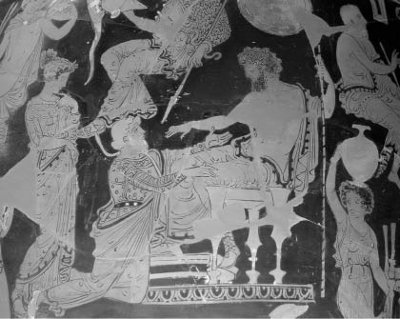

Bilici tanrı Apollon'un soyundan gelen Kalhas (Kalkhas); antikçağda Yunanistan halklarını yönlendiren krallar ve tanrılar arasında elçilik eden en ünlü birkaç biliciden biriydi. Örneğin Troya prensi Paris'le evini barkını bırakıp kaçan Yunanistanlı güzel Helena'nın namusunu temizlemek amacıyla Başkral Agamemnon, Troya'ya savaş açınca, Başkral'la Olimposlu tanrılar arasında hep o aracılık etti...
Zaten daha savaş başlamazdan önce bilici Kalhas; Delfoy tapınağında tanrılarla konuştuğu haberini ulaştırdı bir gün Başkral Agamemnon'a. Çünkü tapınakta; "Hemen Agamemnon'un ordularına katıl!" demişti Baştanrı ona. "Başları sıkıştığında krallar hep sana başvuracaklar; biz de senin aracılığınla buyruklarımızı bildireceğiz. Savaş sırasında hep Troya'da olacaksın. Troya zaptedilip ateşe verildikten sonra sen de geri döneceksin." Bu tanrı buyruğu gereğince hemen Kalhas'ı yanına aldı krallar kralı Agamemnon...
Sefere çıkmadan önce, Apollon tapınağının avlusunda, Troya'ya savaşa gidecek komutanların önünde tanrılara kurbanlar kesildi. Sofralar kuruldu. Tam yemek yeneceği sırada aniden bir azman yılan çıkıverdi ortaya! Yılan sürüne sürüne gidip tapınağın yanındaki büyük bir ağaca tırmandı. Bir dalın yaprakları arasına yapılmış yuvaya girip sekiz yavru kuşu ardı ardına yuttu. Sonra da çığlıklar atmaya başlayan ana kuşu da bir solukta midesine indiriverdi!.. Böylece dokuz kuşu yutan yılan, yavaş yavaş sağılaraktan aşağıya indi ve iner inmez de büyükçe bir taşa dönüşüverdi!.. Bu olay haliyle bütün komutanları ve yetkilileri şaşkına çevirdi... Orada hazır bulunan bilici ve tanrı elçisi Kalhas; "Bu, tanrıların bize bir iletisidir," diye olayı yorumlamaya başladı. "Troya savaşı tam dokuz yıl sürecek ve onuncu yılında da kent yağmalandıktan, yakılıp yıkıldıktan sonra eve dönüş başlayacak..."
Savaş sırasında her başı sıkıştığında Kalhas'a akıl danışıyordu Başkral Agamemnon... Ve Troya surları işgalcilere geçit vermediği için de savaş hep surların dışında sürüp gidiyordu. Agamemnon'un orduları, çevre illerde kadın ve servet yağması cinsinden çapulculuk seferlerine de çıkıyordu sık sık... Bu seferler sırasında komutanlar, derledikleri güzel kadın ve de ziynetlerin aslan payını Başkral Agamemnon'a sunduktan sonra, kalanını aralarında pay ediyorlardı...

Başkral Agamemnon ve bilici Kalhas
Bir ara orduda veba salgını başladı... Bu illetten kurtulmak için hemen Kalhas'a danıştı Başkral. Bilici Kalhas da; barakasına doldurduğu savaş ganimeti kızlardan Hriseyis'i (Khryseis) babasına geri vermesi gerektiğini söyledi Agamemnon'a... Çünkü savaş ganimeti bu kızın babası, Apollon'un tapınağında rahipti. Bir süre önce bu rahip, kızını istemeye geldiğinde Agamemnon onu binbir küfürle kovmuştu! O da gidip tanrı Apollon'a dert yanmıştı. O yüzden tanrı Apollon, veba saçan fareler salmıştı Yunanistanlı Başkral Agamenon'un orduları arasına!..
Kalhas'ın bu uzgörüsü üzerine küplere bindi Agamemnon... Ona, "Şom ağızlı, ağzından hiç iyi bir söz çıkmaz senin!" diye bağırıp çağırdı. Ama gene de çok sevdiği kölesi güzel Hriseyis'i geri vermeye razı oldu. Ne var ki Ahilleus'un çok sevdiği savaş ganimeti güzel Briseyis'i alacaktı bu verdiğinin karşılığında!.. Bu niyetini herkesin önünde açıklayınca yarı ölümsüz Ahilleus da Agamemnon'a küfürler yağdırdı üst üste... Sonunda; "Troyalılar bana bir kötülük etmedi ki! Sırf sen ün, servet kazanasın diye onları kırıp geçireyim, öyle mi?" deyip savaştan çekildi...
Hani saymakla bitip tükenecek gibi değildi Kalhas'ın uzgörüleri!.. Örneğin Troya'nın düşmesi için o ünlü Troya Atı'nın yapımını aslında o önerdi... Hatta atın karnına gizlenen askerlerin arasında kendisi de vardı!..
Gerçekten de savaşın onuncu yılında Troya yakılıp yıkıldıktan sonra Kalhas, Yunanistan'a dönüş sırasında çok büyük fırtınalar kopacağını söyledi Agamemnon'a... Savaştan sonra herkes evine, yurduna dönmek için can atıyordu... Tabii dünya fatihi Agamemnon da güzel kadın kölelerle, altın gümüş ve metallerle tıkabasa doldurduğu gemilerinin yelkenlerini açıyordu acele acele... Kalhas'ı dinleyecek hiç mi hiç zamanı yoktu... Hatta savaş nedeni güzel Helena'yı bile alıp götürmeyi unutacaktı bu hengâmede!..
Tanrı elçisi bilici Kalhas da, Agamemnon'a sözünü dinletemeyince Yunanistan'a dönmeyip Troya'da kaldı... Daha sonra İzmir taraflarına gidip oralarda mülk edindiği bazı boş tarlaları üzüm bağlarına dönüştürdü... Bu arada İzmirli Mopsos adında ünlü bir biliciyle de tanıştı... İki bilici, bilicilik düzeylerini ölçmek için birbirlerine sorular sorup yarıştılar bir gün... Yarışmanın sonunda Mopsos, yaşayan Anadolulu bilicilerin en büyüğü olduğunu söyledi. Hatta Kalhas'ın o yıl yetiştirdiği üzümlerden kuracağı nefis şaraptan bir yudum bile tadamadan öleceğini söyledi... Bu sözlere gülüp geçti Kalhas ve o yıl küpler dolusu çeşit çeşit şarap kurdu...
Bir akşam dostlarını evine çağırdı ve yemek öncesi hepsinin bardaklarını bu ilk kurduğu şarapla doldurdu... Konuklarının onuruna kaldırdığı bardağını tam ağzına götürürken de, birdenbire İzmirli bilici Mopsos'un sözleri geldi aklına...
Ve kahkahalarla, katıla katıla gülmeye başladı... O kadar çok güldü ki Kalhas, şarabını içemeden boğulup olduğu yere yığılıverdi...